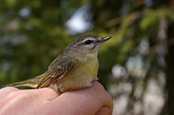
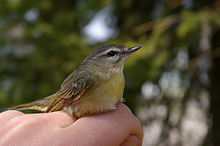

| Philadelphia Vireo | |
|---|---|
|  | |
| Conservation status | |
| Binomial name | |
| Vireo philadelphicus (Cassin, 1851) |
| Philadelphia Vireo | |
|---|---|
|  | |
| Conservation status | |
| Binomial name | |
| Vireo philadelphicus (Cassin, 1851) |
The Philadelphia Vireo, Vireo philadelphicus, is a small songbird.
Adults are mainly olive-brown on the upperparts with yellow underparts; they have dark eyes and a grey crown. There is a dark line through the eyes and a white stripe just over them. They have thick blue-grey legs and a stout bill.
Their breeding habitat is the edges of deciduous and mixed woods across Canada. They make a basket-shaped cup nest in a fork of a tree branch, usually placed relatively high.
These birds migrate to Mexico and Central America. This vireo is a very rare vagrant to western Europe.
They forage for insects in trees, sometimes hovering or flying to catch insects in flight. They also eat berries, especially before migration.
These birds sometimes imitate the calls of Red-eyed Vireos.
They are unlikely to visit Philadelphia, except in migration.

{kind=link}